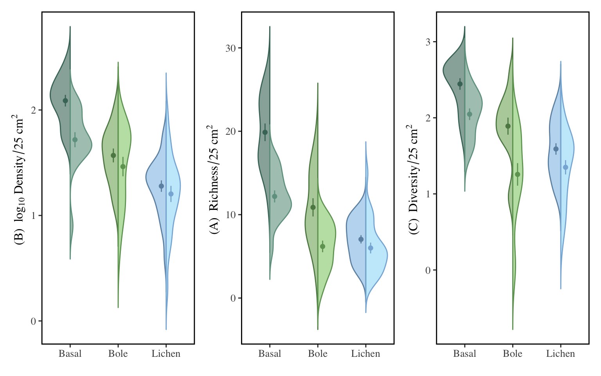
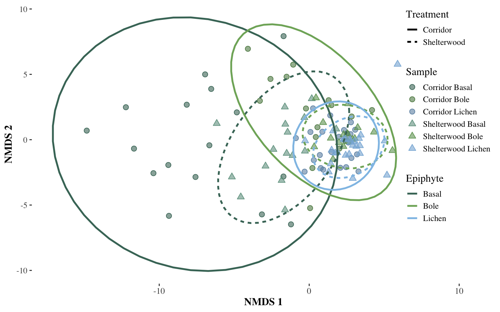
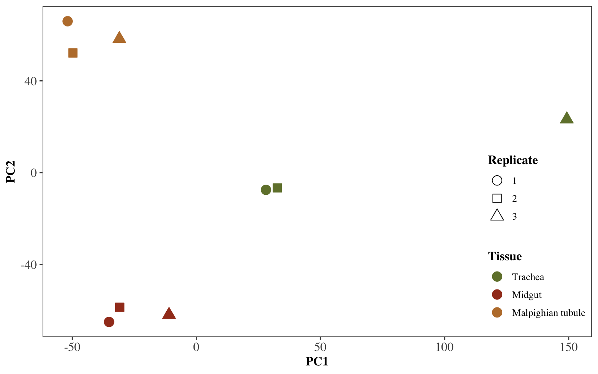
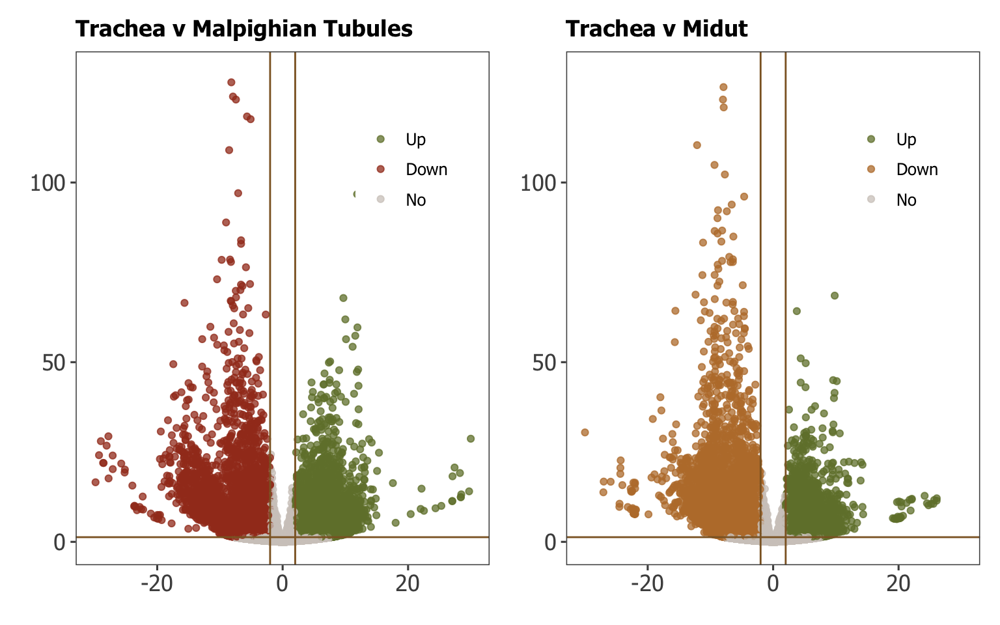
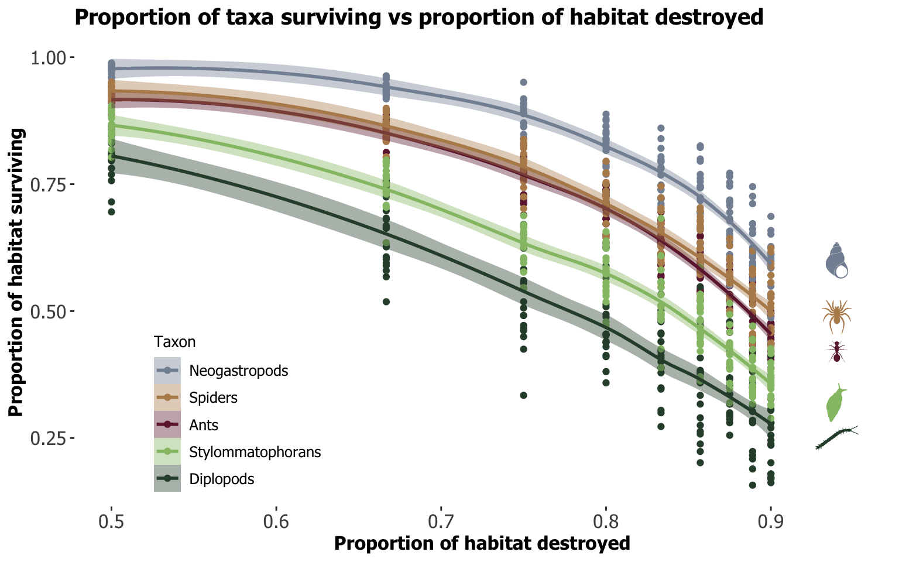
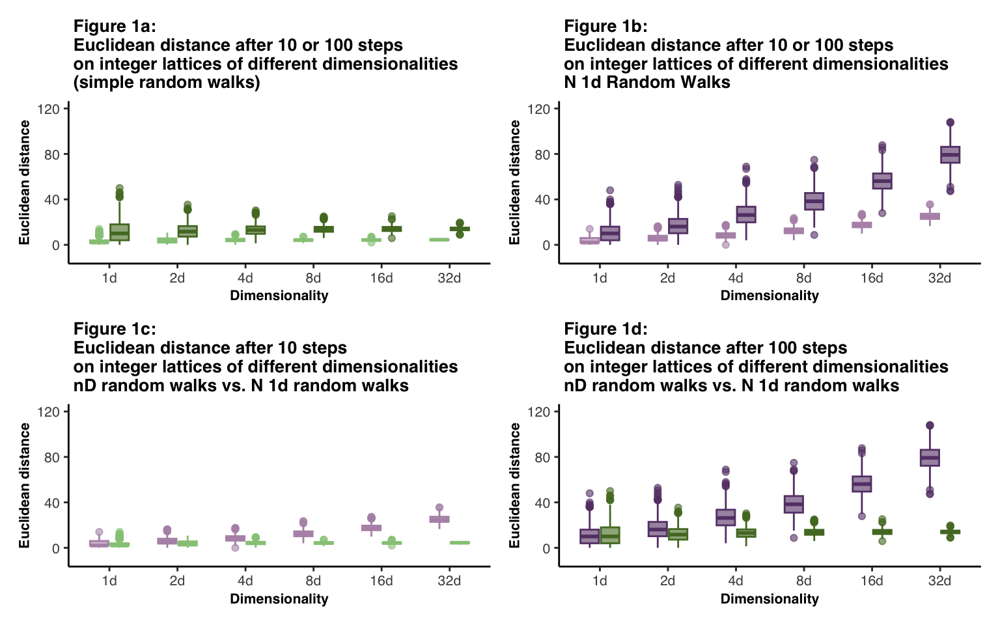
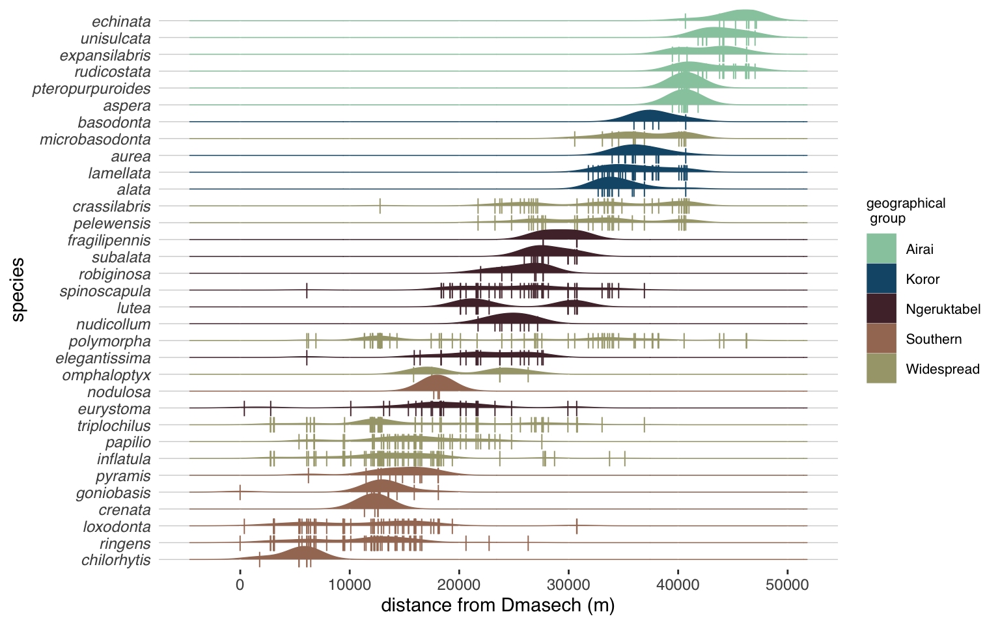
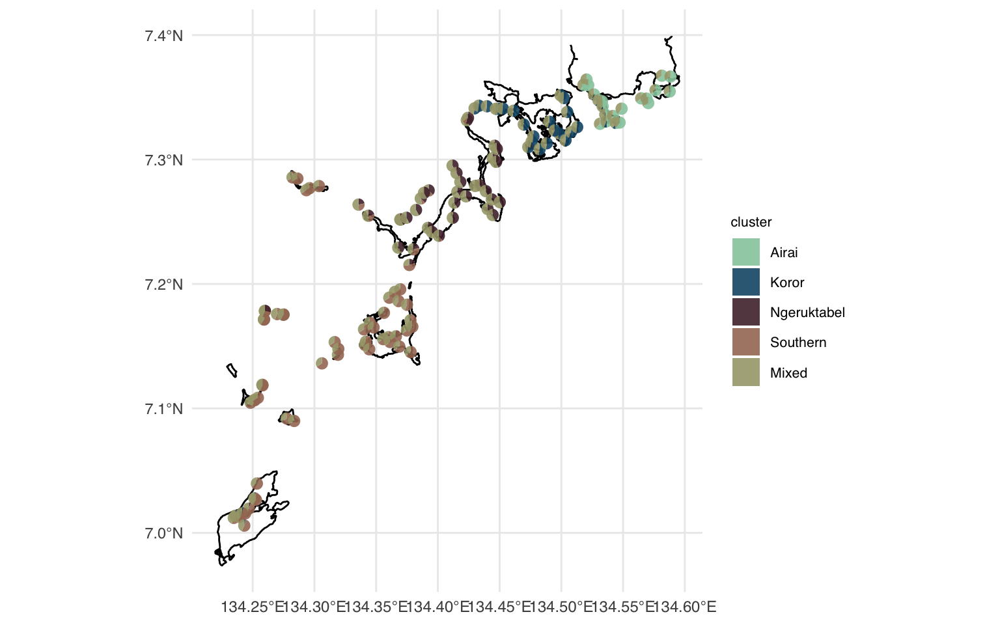

Tahnee Ames, MSc
About
Data visualization is critical for effective communication of
scientific data. This portfolio illustrates my dedication to assisting
scientists, especially in the biological fields, in crafting
aesthetically appealing figures that can show off their data.
Dropdown menu includes code and resultant figures, sorted by plot type.
Split violin plot
Split violin plots using microarthropod
data.
Showing univariate data betwween two treatments, each with
three levels.
Code
#libraries used
library(vegan)
library(betapart)
library(psych)
library(ggplot2)
library(ggthemes)
library(ggnewscale)
library(gridExtra)
library(knitr)
library(patchwork)#plot code
#split violin plot for variable:abundance
abund_wrap<-ggplot(metadataMossType, aes(x=reorder(epiphytesep,-abundance), y=log10(abundance),fill=newFactor,color=newFactor))+
introdataviz::geom_split_violin(alpha=.6,trim = FALSE)+
stat_summary(fun.data = "mean_se", geom = "pointrange",size=0.25, show.legend = F,
position = position_dodge(.4)) +
labs(x = element_blank(),y=(bquote("(B) "~log[10]~Density/25~cm^2~{})))+
scale_color_manual(values=c("#5D8852","#6D92B1","#477567","#6EA161","#87B4DA","#70A08F"),guide="none")+
scale_fill_manual(values=c("#7FB069","#90C2E7","#477567","#92CE7B","#9FDDF7","#70A08F"),guide="none")+
theme_tufte()+
theme(plot.title = element_text(size = 13, family = "Times", face = "bold"),
text = element_text(size = 12, family = "Times"),
axis.title = element_text(face="bold"),
axis.text.x=element_text(size = 10),
axis.text.y=element_text(size = 10),
strip.text = element_text(face="bold"))+
theme(panel.grid.major = element_blank(), panel.grid.minor = element_blank(),panel.background = element_rect( size = 1, linetype = "solid"))+
theme(legend.position ="none")#split violin plot for variable:richness
rich_wrap<-ggplot(metadataMossType, aes(x=reorder(epiphytesep,-abundance), y=richness,fill=newFactor,color=newFactor))+
introdataviz::geom_split_violin(alpha=.6,trim = FALSE)+
stat_summary(fun.data = "mean_se", geom = "pointrange",size=0.25, show.legend = F,
position = position_dodge(.4)) +
labs(x = element_blank(),y=(bquote("(A) "~Richness/25~cm^2~{})))+
scale_color_manual(values=c("#5D8852","#6D92B1","#477567","#6EA161","#87B4DA","#70A08F"),guide="none")+
scale_fill_manual(values=c("#7FB069","#90C2E7","#477567","#92CE7B","#9FDDF7","#70A08F"),guide="none")+
theme_tufte()+
theme(plot.title = element_text(size = 13, family = "Times", face = "bold"),
text = element_text(size = 12, family = "Times"),
axis.title = element_text(face="bold"),
axis.text.x=element_text(size = 10),
axis.text.y=element_text(size = 10),
strip.text = element_text(face="bold"))+
theme(panel.grid.major = element_blank(), panel.grid.minor = element_blank(),panel.background = element_rect( size = 1, linetype = "solid"))+
theme(legend.position ="none")#split violin plot for variable:diversity
div_wrap<-ggplot(metadataMossType, aes(x=reorder(epiphytesep,-abundance), y=diversity,fill=newFactor,color=newFactor))+
introdataviz::geom_split_violin(alpha=.6,trim = FALSE)+
stat_summary(fun.data = "mean_se", geom = "pointrange", size=0.25,show.legend = F,
position = position_dodge(.4)) +
labs(x = element_blank(),y=(bquote("(C) "~Diversity/25~cm^2~{})))+
scale_color_manual(values=c("#5D8852","#6D92B1","#477567","#6EA161","#87B4DA","#70A08F"),guide="none")+
scale_fill_manual(values=c("#7FB069","#90C2E7","#477567","#92CE7B","#9FDDF7","#70A08F"),guide="none")+
theme_tufte()+
theme(plot.title = element_text(size = 13, family = "Times", face = "bold"),
text = element_text(size = 12, family = "Times"),
axis.title = element_text(face="bold"),
axis.text.x=element_text(size = 10),
axis.text.y=element_text(size = 10),
strip.text = element_text(face="bold"))+
theme(panel.grid.major = element_blank(), panel.grid.minor = element_blank(),panel.background = element_rect( size = 1, linetype = "solid"))+
theme(legend.position ="none")#combine plots
Violin <- (abund_wrap | rich_wrap | div_wrap)Figure
Violin
NMDS
Ordination using the same microarthropod dataset as Violin.
Code
#packages used
library(vegan)
library(betapart)
library(psych)
library(ggplot2)
library(ggthemes)#plot code
Ordination=ggplot(NMDSord, aes(x=MDS1, y=MDS2))+
geom_point(aes(color=metadataMossType$newFactor, fill=metadataMossType$newFactor,shape=factor(metadataMossType$newFactor)),size=2.5)+
scale_fill_manual(values=alpha(c("#477567","#5D8852","#6D92B1","#70A08F","#6EA161","#87B4DA"),.6),
name ="Sample",
breaks=c("corridorSkirt","corridorBole","corridorLichen","shelterwoodSkirt","shelterwoodBole","shelterwoodLichen"),
labels=c("Corridor Basal","Corridor Bole","Corridor Lichen","Shelterwood Basal","Shelterwood Bole","Shelterwood Lichen"))+
scale_color_manual(values=c("#477567","#5D8852","#6D92B1","#70A08F","#6EA161","#87B4DA"),
name ="Sample",
breaks=c("corridorSkirt","corridorBole","corridorLichen","shelterwoodSkirt","shelterwoodBole","shelterwoodLichen"),
labels=c("Corridor Basal","Corridor Bole","Corridor Lichen","Shelterwood Basal","Shelterwood Bole","Shelterwood Lichen"))+
new_scale("color")+
scale_shape_manual(values=c(21,21,21,24,24,24),
name="Sample",breaks=c("corridorSkirt","corridorBole","corridorLichen","shelterwoodSkirt","shelterwoodBole","shelterwoodLichen"),
labels=c("Corridor Basal","Corridor Bole","Corridor Lichen","Shelterwood Basal","Shelterwood Bole","Shelterwood Lichen"))+
stat_ellipse(size=1,aes(x = MDS1,y=MDS2,color=metadataMossType$epiphytesep,linetype=factor(metadataMossType$standType)))+
scale_linetype_discrete(name="Treatment", labels=c("Corridor","Shelterwood"))+
scale_color_manual(values=c("#477567","#7FB069","#90C2E7"),name="Epiphyte", breaks=c("Basal","Bole","Lichen"),labels=c("Basal","Bole","Lichen"))+
labs(x="NMDS 1", y="NMDS 2")+
theme_bw()+
theme(plot.title = element_text(size = 15, family = "Times", face = "bold"),text = element_text(size = 12, family = "Times"),axis.title = element_text(face="bold"),axis.text.x=element_text(size = 10),panel.grid.major = element_blank(),panel.grid.minor = element_blank(),panel.border = element_blank())+
theme(legend.justification=c(1,1), legend.position=c(1,1))+
theme(legend.background = element_rect(fill = "transparent"),legend.key = element_rect(fill = "transparent", color = NA))+
xlim(NA,11)+theme(panel.background = element_rect(fill = "transparent",colour = "transparent"))+
theme(plot.background = element_rect(fill = "transparent"))+
theme(legend.key.height= unit(.5, 'cm'),
legend.key.width= unit(.5, 'cm'))Figure
Ordination
PCA
Principle Components Analysis of differential gene expression between
tracheal tissue, malpighian tubule tissue, and midgut tissue, using Chaoborid dataset.
##Code
#packages used
library(DESeq2)
library(ggplot2)
library(ggthemes)
library(scales)
library(patchwork)
library(gridExtra)
library(MetBrewer)
library(dplyr)#Plot code
PCA=ggplot(euPCA,aes(PC1,PC2,col=tissue,shape=rep,fill=tissue))+
geom_point(size=4)+
scale_color_manual(name="Tissue",labels=c("Trachea","Midgut","Malpighian tubule"),values=c("#718038","#A33B20","#BC7D38"),limits=c("trach","malTube","gut"))+
scale_fill_manual(name="Tissue",labels=c("Trachea","Midgut","Malpighian tubule"),values=c("#718038","#A33B20","#BC7D38"),limits=c("trach","malTube","gut"))+
scale_shape_manual(name="Replicate",labels=c("1","2","3"),values=c(21,22,24),limits=c("1","2","3"))+
theme_few()+
theme(plot.title = element_text(size = 12, family = "Times", face = "bold"),
text = element_text(size = 12, family = "Times"),
axis.title = element_text(face="bold",size=12),
axis.text.x=element_text(size = 12),
axis.text.y=element_text(size = 12),
strip.text = element_text(face="bold"))+
theme(legend.title = element_text(size = 12, face = "bold"),text=element_text(size =12, family = "Times"))+
theme(legend.position=c(.9,.3))+
guides(color=guide_legend(order=2),fill=guide_legend(order=2),shape=guide_legend(order=1))+
theme(legend.background = element_rect(fill = "transparent"),legend.key = element_rect(fill = "transparent", color = NA))+
theme(panel.background = element_rect(fill = "transparent",colour = "transparent"))+
theme(plot.background = element_rect(fill = "transparent"))Figure
PCA
Volcano plot
Volcano plot showing gene expression data using the same Chaoborid data from PCA, comparing tracheal tissue to Malpighian tubule tissue and midgut tissue
Code
#plot code
#pairwise 1
euc_volcano_MT <- ggplot(data=euc_deMT5_DF, aes(x=log2FoldChange, y=-log10(pvalue), col=diffexpressed2)) + geom_point(alpha=0.75) + theme_few() +
geom_vline(xintercept=c(-2, 2), col="#8d642c") +
geom_hline(yintercept=-log10(0.05), col="#8d642c")+
labs(title="Trachea v Malpighian Tubules",x= element_blank(),y= element_blank()) +
theme(plot.title = element_text(size = 13, family = "Tahoma", face = "bold"),
text = element_text(size = 12, family = "Tahoma"),
axis.title = element_text(face="bold"),
axis.text.x=element_text(size = 13),
axis.text.y=element_text(size = 13),
strip.text = element_text(face="bold"))+
scale_color_manual(name="",labels=c("Up","Down","No"), values=c("#718038","#A33B20","#D2CAC5"),limits=c("UP","DOWN","NO"))+
ylim(NA,130)+
xlim(-30,30)+
theme(legend.position=c(.8,.8))
#pairwise 2
euc_volcano_GI <- ggplot(data=euc_deGI5_DF, aes(x=log2FoldChange, y=-log10(pvalue), col=diffexpressed2)) + geom_point(alpha=0.75) + theme_few() +
geom_vline(xintercept=c(-2, 2), col="#8d642c") +
geom_hline(yintercept=-log10(0.05), col="#8d642c")+
labs(title="Trachea v Midut",x= element_blank(),y= element_blank()) +
theme(plot.title = element_text(size = 13, family = "Tahoma", face = "bold"),
text = element_text(size = 12, family = "Tahoma"),
axis.title = element_text(face="bold"),
axis.text.x=element_text(size = 13),
axis.text.y=element_text(size = 13),
strip.text = element_text(face="bold"))+
scale_color_manual(name="",labels=c("Up","Down","No"), values=c("#718038","#BC7D38","#D2CAC5"),limits=c("UP","DOWN","NO"))+
ylim(NA,130)+
xlim(-30,30)+
theme(legend.position=c(.8,.8))
#combine
Volcano <- euc_volcano_MT + euc_volcano_GI Figure
Volcano
Histogram
Combined figure illustrating transcriptome assembly completeness based on BLAST identity, by gene class. using Chaoborid assembly data.
Code
#libraries used
library(ggplot2)
library(ggthemes)
library(gridExtra)
library(patchwork)
library(MetBrewer)
library(tidyverse)
library(cowplot)#plot code
#plot identity of BLAST hit (x-axis) and length of hit divided by length of query (y-axis)
id_by_length <- ggplot(geneContent,aes(x=percIdent,y=percSeq,fill=class,color=class)) +
geom_point(shape=21,alpha=0.65,size=2.3) +
labs(x="Percent identity of BLAST hit",y="BLAST hit length / query length") +
scale_color_manual(values=met.brewer('Moreau',16),
name ="Class",
breaks=c("carbonicAnhydrase","channel_Cl","channel_K","channel_water","cuticularProtein","DEGENaC_pickpocket","exchanger_CPA","exchanger_other","NaKatpase_subunit","receptor_CAPA","receptor_leukokinin","receptor_serotonin","Resilin","vatpaseSubunit","V0_domain"),
labels=c("Carbonic anhydrase",expression(paste("Cl"^"-","channel")),expression(paste("K"^"+","channel")),"Water channel","Cuticular protein","Pickpocket gene","CPA exchanger","Other exchanger",expression(paste("Na"^"+","K"^"+","ATPase subunit")),"CAPA receptor","Leukokinin receptor","Serotonin receptor","Resilin",expression(paste("Vacuolar H"^"+","ATPase subunit")),"V0 domain"))+
scale_fill_manual(values=met.brewer('Moreau',16),
name ="Class",
breaks=c("carbonicAnhydrase","channel_Cl","channel_K","channel_water","cuticularProtein","DEGENaC_pickpocket","exchanger_CPA","exchanger_other","NaKatpase_subunit","receptor_CAPA","receptor_leukokinin","receptor_serotonin","Resilin","vatpaseSubunit"),
labels=c("Carbonic anhydrase",expression(paste("Cl"^"-","channel")),expression(paste("K"^"+","channel")),"Water channel","Cuticular protein","Pickpocket gene","CPA exchanger","Other exchanger",expression(paste("Na"^"+","K"^"+","ATPase subunit")),"CAPA receptor","Leukokinin receptor","Serotonin receptor","Resilin",expression(paste("Vacuolar H"^"+","ATPase subunit"))))+
theme_few() +
theme(
text = element_text(size = 10, family = "sans"),
axis.title = element_text(face="bold"),
axis.text.x=element_text(size = 10),
axis.text.y=element_text(size = 10),
strip.text = element_text(face="bold"))+
theme(legend.title = element_text(
family = "sans",size = 8),legend.text=element_text(family = "sans",size = 6))+
theme(legend.text.align = 0)+
theme(legend.key.height= unit(.35, 'cm'),
legend.key.width= unit(.5, 'cm'))#generate histograms of percent identity and of length of hit divided by length of query
#id
id_hist <- ggplot(data=geneContent,aes(x=percIdent)) +
geom_histogram(binwidth=5,color="#A1A18A",fill="#A1A18A",alpha=0.7) +
labs(x="Percent identity of BLAST hit",y=element_blank())+
theme_few()+
theme(plot.title = element_text(size = 12, family = "sans", face = "bold"),
text = element_text(size = 10, family = "sans"),
axis.title = element_text(face="bold"),
axis.text.x=element_text(size = 10),
axis.text.y=element_text(size = 10),
strip.text = element_text(face="bold"))#length
length_hist <- ggplot(data=geneContent,aes(x=percSeq)) +
geom_histogram(binwidth=.05,color="#e3b577",fill="#e3b577",alpha=0.7) +
labs(x="BLAST hit length / query length",y=element_blank())+
theme_few()+
theme(plot.title = element_text(size = 12, family = "sans", face = "bold"),
text = element_text(size = 10, family = "sans"),
axis.title = element_text(face="bold"),
axis.text.x=element_text(size = 10),
axis.text.y=element_text(size = 10),
strip.text = element_text(face="bold"))#compile into one plot
id_grid <- plot_grid(id_hist,length_hist)
Histogram <- plot_grid(id_grid,id_by_length,ncol=1)Figure
Histogram
LOWESS
LoWeSS curve illustrating survivability as a proportion of habitat by taxon group, with silhouettes from phylopic.
Code
#packages
library(ggplot2)
library(ggthemes)
library(rphylopic)## You are using rphylopic v.1.5.0.9000. Please remember to credit PhyloPic contributors (hint: `get_attribution()`) and cite rphylopic in your work (hint: `citation("rphylopic")`).#plot code - base
lowPlot <- ggplot(HLES6, aes(x = (1-habitatRemaining), y = percentSurvive, color = taxon, fill = taxon))+
theme_tufte() +
geom_point() +
geom_smooth() +
scale_fill_manual(values=c("#8491A3","#B78B5A","#6D213C","#95BF73","#2F4C38"),
name ="Taxon",
breaks=c("neogastropods","spider","ants","stylo","diplopoda"),
labels=c("Neogastropods","Spiders","Ants","Stylommatophorans","Diplopods"))+
scale_color_manual(values=c("#8491A3","#B78B5A","#6D213C","#95BF73","#2F4C38"),
name ="Taxon",
breaks=c("neogastropods","spider","ants","stylo","diplopoda"),
labels=c("Neogastropods","Spiders","Ants","Stylommatophorans","Diplopods"))+
labs(x= "Proportion of habitat destroyed", y="Proportion of habitat surviving",title = "Proportion of taxa surviving vs proportion of habitat destroyed")+
theme(plot.title = element_text(size = 14, family = "Tahoma", face = "bold"),
text = element_text(size = 12, family = "Tahoma"),
axis.title = element_text(face="bold"),
axis.text.x=element_text(size = 12),
axis.text.y=element_text(size = 12),
strip.text = element_text(face="bold"))+
xlim(0.5,0.95)+
theme(legend.position =c(0.2,0.2))+
theme(legend.title = element_text(
family = "Tahoma",size = 10))#add phylopics
ant_uuid <- get_uuid(name = "formicoids")
neo_uuid <- get_uuid(name = "Tricolia pullus")
stylo_uuid <-get_uuid(name = "Myosotella myosotis")
dip_uuid <- get_uuid(name = "Myriapoda")
spi_uuid <- get_uuid(name = "Liphistius desultor")#add silhouettes to plot
LoWeSS=lowPlot +
add_phylopic(uuid = ant_uuid, x = .94, y = .42, height = .043, fill="#6D213C") +
add_phylopic(uuid =neo_uuid, x = .94, y = .6, height = .072, fill="#8491A3") +
add_phylopic(uuid =stylo_uuid, x = .94, y = .32, height = .077, fill="#95BF73") +
add_phylopic(uuid =dip_uuid, x = .94, y = .25, height = .049, fill="#2F4C38") +
add_phylopic(uuid =spi_uuid, x = .94, y = .49, height = .073, fill="#B78B5A") Figure
LoWeSS
Joined boxplots
Boxplots comparing Euclidean distances for increasing dimensionalities for different random walk conditions
Code
#packages used
library(ggplot2)
library(patchwork)
library(ggthemes)# boxplot 1
fig1a <- ggplot(allDists10and100_nd, aes(x=as.character(dimension), y=dists,fill=as.character(steps),color=as.character(steps)))+
geom_boxplot(width = .6, alpha=.6,show.legend = FALSE)+
scale_x_discrete(name="Dimensionality",labels=c("1d","2d","4d","8d","16d","32d"),limits =c("1","2","4","8","16","32"))+
scale_y_continuous(name="Euclidean distance", limits = c(-10, 120))+
scale_color_manual(name = "Random walk flavor \nand time steps", values=c("#96C886","#53782B"),limits=c("10","100"), labels = c("Ten steps, simple", "100 steps, simple"),guide="none")+
scale_fill_manual(name = "Random walk flavor \nand time steps", values=c("#96C886","#53782B"),limits=c("10","100"), labels = c("Ten steps, simple", "100 steps, simple"),guide = guide_legend(override.aes = list(shape = 15)))+
theme_classic()+
theme(plot.title = element_text(size = 10, family = "sans", face = "bold"),
text = element_text(size = 8, family = "sans"),
axis.title = element_text(face="bold"),
axis.text.x=element_text(size = 8),
axis.text.y=element_text(size = 8),
strip.text = element_text(face="bold"))+
theme(panel.grid.major = element_blank(), panel.grid.minor = element_blank(),panel.background = element_rect( size = 1, linetype = "solid"))+
theme(legend.position=c(0.15,0.82), legend.title = element_text(size=7)) +
theme(legend.key.size = unit(0.3, 'cm'))+
ggtitle(" Figure 1a: \n Euclidean distance after 10 or 100 steps \n on integer lattices of different dimensionalities \n (simple random walks)")#boxplot 2
fig1b <- ggplot(allDists_n1d_10and100, aes(x=as.character(dimension), y=dists,fill=as.character(steps),color=as.character(steps)))+
geom_boxplot(width = .6, alpha=.6,show.legend = FALSE)+
scale_x_discrete(name="Dimensionality",labels=c("1d","2d","4d","8d","16d","32d"),limits =c("1","2","4","8","16","32"))+
scale_y_continuous(name="Euclidean distance", limits = c(-10, 120))+
scale_color_manual(name = "Random walk flavor \nand time steps", values=c("#B594B6","#664176"),limits=c("10","100"), labels = c("Ten steps, n 1d", "100 steps, n 1d"),guide="none")+
scale_fill_manual(name = "Random walk flavor \nand time steps", values=c("#B594B6","#664176"),limits=c("10","100"), labels = c("Ten steps, n 1d", "100 steps, n 1d"),guide = guide_legend(override.aes = list(shape = 15)))+
theme_classic()+
theme(plot.title = element_text(size = 10, family = "sans", face = "bold"),
text = element_text(size = 8, family = "sans"),
axis.title = element_text(face="bold"),
axis.text.x=element_text(size = 8),
axis.text.y=element_text(size = 8),
strip.text = element_text(face="bold"))+
theme(panel.grid.major = element_blank(), panel.grid.minor = element_blank(),panel.background = element_rect( size = 1, linetype = "solid"))+
theme(legend.position=c(0.15,0.82), legend.title = element_text(size=7)) +
theme(legend.key.size = unit(0.3, 'cm'))+
ggtitle(" Figure 1b: \n Euclidean distance after 10 or 100 steps \n on integer lattices of different dimensionalities \n N 1d Random Walks")#boxplot 3
fig1c <- ggplot(allDists10_ndn1d, aes(x=as.character(dimension), y=dists,fill=as.character(flavor),color=as.character(flavor)))+
geom_boxplot(width = .6, alpha=.6,show.legend = FALSE)+
scale_x_discrete(name="Dimensionality",labels=c("1d","2d","4d","8d","16d","32d"),limits =c("1","2","4","8","16","32"))+
scale_y_continuous(name="Euclidean distance", limits = c(-10, 120))+
scale_color_manual(name = "Random walk flavor \nand time steps", values=c("#96C886","#B594B6"),limits=c("nd","n1d"), labels = c("Ten steps, simple", "Ten steps, n 1d"),guide="none")+
scale_fill_manual(name = "Random walk flavor \nand time steps", values=c("#96C886","#B594B6"),limits=c("nd","n1d"), labels = c("Ten steps, simple", "Ten steps, n 1d"),guide = guide_legend(override.aes = list(shape = 15)))+
theme_classic()+
theme(plot.title = element_text(size = 10, family = "sans", face = "bold"),
text = element_text(size = 8, family = "sans"),
axis.title = element_text(face="bold"),
axis.text.x=element_text(size = 8),
axis.text.y=element_text(size = 8),
strip.text = element_text(face="bold"))+
theme(panel.grid.major = element_blank(), panel.grid.minor = element_blank(),panel.background = element_rect( size = 1, linetype = "solid"))+
theme(legend.position=c(0.15,0.82), legend.title = element_text(size=7)) +
theme(legend.key.size = unit(0.3, 'cm'))+
ggtitle(" Figure 1c: \n Euclidean distance after 10 steps \n on integer lattices of different dimensionalities \n nD random walks vs. N 1d random walks")#boxplot 4
fig1d <- ggplot(allDists100_ndn1d, aes(x=as.character(dimension), y=dists,fill=as.character(flavor),color=as.character(flavor)))+
geom_boxplot(width = .6, alpha=.6,show.legend = FALSE)+
scale_x_discrete(name="Dimensionality",labels=c("1d","2d","4d","8d","16d","32d"),limits =c("1","2","4","8","16","32"))+
scale_y_continuous(name="Euclidean distance", limits = c(-10, 120))+
scale_color_manual(name = "Random walk flavor \nand time steps", values=c("#53782B","#664176"),limits=c("nd","n1d"), labels = c("100 steps, simple", "100 steps, n 1d"),guide="none")+
scale_fill_manual(name = "Random walk flavor \nand time steps", values=c("#53782B","#664176"),limits=c("nd","n1d"), labels = c("100 steps, simple", "100 steps, n 1d"),guide = guide_legend(override.aes = list(shape = 15)))+
theme_classic()+
theme(plot.title = element_text(size = 10, family = "sans", face = "bold"),
text = element_text(size = 8, family = "sans"),
axis.title = element_text(face="bold"),
axis.text.x=element_text(size = 8),
axis.text.y=element_text(size = 8),
strip.text = element_text(face="bold"))+
theme(panel.grid.major = element_blank(), panel.grid.minor = element_blank(), panel.background = element_rect( size = 1, linetype = "solid"))+
theme(legend.position=c(0.15,0.82), legend.title = element_text(size=7)) +
theme(legend.key.size = unit(0.3, 'cm'))+
ggtitle(" Figure 1d: \n Euclidean distance after 100 steps \n on integer lattices of different dimensionalities \n nD random walks vs. N 1d random walks")Boxplots=(fig1a | fig1b) / (fig1c | fig1d)Figure
Boxplots
Ridgeline plot
Ridgeline plot using snail betadiversity data
Code
#packages used
library(ggplot2)
library(tidyverse)
library(ggthemes)
library(ggridges)#plot code
Ridgeline=ggplot(hungerALL_3, aes(x = distFromDmasech, y = species_lumped, color =
geoGrp, fill = geoGrp)) +
geom_density_ridges(
jittered_points = TRUE, scale = .95, rel_min_height = .01,
point_shape = "|", point_size = 3, size = 0.25,
position = position_points_jitter(height = 0)) +
scale_fill_manual(name = "geographical \n group",
values=c("#96CAAC","#175676","#512D38","#A47963","#A6A57A"))+
scale_color_manual(name = "geographical \n group",
values=c("#96CAAC","#175676","#512D38","#A47963","#A6A57A"))+
scale_y_discrete(limits = c("chilorhytis", "ringens", "loxodonta", "crenata", "goniobasis", "pyramis", "inflatula", "papilio",
"triplochilus", "eurystoma", "nodulosa", "omphaloptyx", "elegantissima", "polymorpha", "nudicollum", "lutea", "spinoscapula",
"robiginosa", "subalata", "fragilipennis", "pelewensis", "crassilabris", "alata", "lamellata", "aurea", "microbasodonta",
"basodonta", "aspera", "pteropurpuroides", "rudicostata", "expansilabris", "unisulcata", "echinata")) +
ylab("species") +
xlab("distance from Dmasech (m)")+
theme(text = element_text(size = 11, family = "sans"),
axis.text.y=element_text(size = 9,family="sans",face="italic"),
axis.ticks.y=element_blank(),
axis.text.x=element_text(size = 9,family="sans"),
legend.text=element_text(size=8,family="sans"),legend.title = element_text(size=8))+
theme(panel.background = element_blank(),panel.grid.major.y = element_line(color = "#D3D3D3",size = 0.25))Figure
Ridgeline
Map
Scattered pie charts for trait clusters mapped to locality data (Palau archipelago)
Code
#packages used
library(sf)
library(mapview)
library(osmdata)
library(scatterpie)Scatter=ggplot() +
geom_sf(data = chelbacheb_coastline$osm_lines,
inherit.aes = FALSE,
color = "black",
size = 0.1) +
geom_scatterpie(aes(x=long, y=lat),
data= localityClusts_localityGroupSummaries,
cols=c("asAirai", "asKoror", "asNgeruktabel", "asSouthern", "asMixed"),
alpha = 0.9, pie_scale = 0.7,color=NA) +
scale_fill_manual(name = "cluster",
values=scatterColours,labels = c("Airai", "Koror","Ngeruktabel","Southern","Mixed"))+
theme_minimal()+
theme(text = element_text(size = 11, family = "sans"),
axis.ticks.y=element_blank(),
axis.text.x=element_text(size = 9,family="sans"),
legend.text=element_text(size=8,family="sans"),legend.title = element_text(size=8))+
theme(panel.background = element_blank(),panel.grid.major.y = element_line(color = "#D3D3D3",size = 0.25))Figure
Scatter
Illustrator
Examples of figures I created using Adobe Illustrator
Arachnid phylogeography map illustrating predicted origin of
species using BioGeoBears and ASAP.

Cell model illustrating movement of ions into and out of the cell membrane.